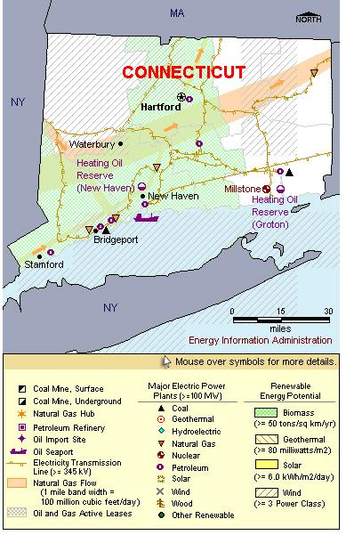

State Overview
There is one operating nuclear power plant in Connecticut:
Millstone (units 2 and 3) in New London County
- The power plant is located at a former granite quarry that provided stone used in the base of the Statue of Liberty.
- Millstone 1 was permanently shut down in November 1995.
- In August 2000, units 2 and 3 were sold to their current owner, Virginia-based Dominion Resources, Inc.
- Units 2 and 3 were temporarily shut down in 1996 due to safety problems but were restarted in 1998.
- On November 28, 2005, the Nuclear Regulatory Commission (NRC) approved a 20-year license extension for Millstone 2 and Millstone 3.
Contribution of Nuclear Power
Millstone represents approximately 25% of total State electric power generating capacity.
Nuclear power accounts for about 50% of Connecticut’s total generation, almost twice the share of natural gas, the second largest fuel source.
Connecticut is a net importer of electricity, importing 6% of its total electric energy use.
Connecticut is one of only six States where nuclear power is the primary energy source.
License Renewals & New Applications
- Millstone: Units 2 and 3 were approved for 20-year license extensions in November 2003. The new license for Unit 2 will expire in July 2035. The new license for Unit 3 will expire in November 2045.
Permanently Shutdown Commercial Reactors
- Haddam Neck in East Hampton
- Millstone (Unit 1) in Waterford

|
| Connecticut Total Electric Power Industry, Summer Capacity and Net Generation, by Energy Source, 2008 |
| Primary Energy Source |
Summer Capacity
(MW) |
Share of State Total
(Percent) |
Net Generation
(Thousand MWh) |
Share of State Total
(Percent) |
| Nuclear |
2,015 |
25.7 |
15,433 |
50.8 |
| Coal |
553 |
7.1 |
4,387 |
14.4 |
| Hydro and Pumped Storage |
151 |
1.9 |
563 |
1.9 |
| Natural Gas |
2,171 |
27.8 |
8,070 |
26.5 |
| Other1 |
27 |
0.3 |
710 |
2.3 |
| Other Renewable1 |
166 |
2.1 |
734 |
2.4 |
| Petroleum |
2,741 |
35.0 |
514 |
1.7 |
| Total |
7,824 |
100.0 |
30,409 |
100.0 |
| Connecticut Nuclear Power Plants, Summer Capacity and Net Generation, 2008 |
| Plant Name/Total Reactors |
Summer Capacity
(MW) |
Net Generation
(Thousand MWh) |
Share of State Nuclear
Net Generation
(Percent) |
Owner |
Millstone
Unit 2, Unit 3 |
2,015 |
15,433 |
100.0 |
Dominion Nuclear Conn Inc |
1 Plant
2 Reactors |
2,015 |
15,433 |
100.0 |
|
|
Plant Profiles
Millstone Nuclear Power Station
| Millstone |
| Unit |
Summer Capacity
(MW) |
Net Generation
(Thousand MWh) |
Summer Capacity Factor
(Percent) |
Type |
Commercial Operation Date |
License Expiration Date |
| 2 |
877 |
6,603 |
86.0 |
PWR |
12/26/1975 |
7/31/2035 |
| 3 |
1,138 |
8,830 |
88.6 |
PWR |
4/23/1986 |
11/25/2045 |
| |
2,015 |
15,433 |
87.5 |
|
|
|
Operator: Dominion Nuclear Connecticut
Location and Service Territory: The power plant is located on Millstone Point, a peninsula near Waterford, Connecticut. The 500-acre site was formerly a granite quarry.
Construction Cost: $8.845 billion (2007 USD)
Reactor Descriptions: Millstone 2 and Millstone 3 are pressurized water reactors. Millstone 2 was supplied by Combustion Engineering. Millstone 3 is a Westinghouse four-loop reactor.
Cooling System: The Millstone plant draws water from Long Island Sound for its once-through cooling system.
see also:
more annual nuclear statistics
projected electricity capacity to 2035
international
electricity statistics
|
|